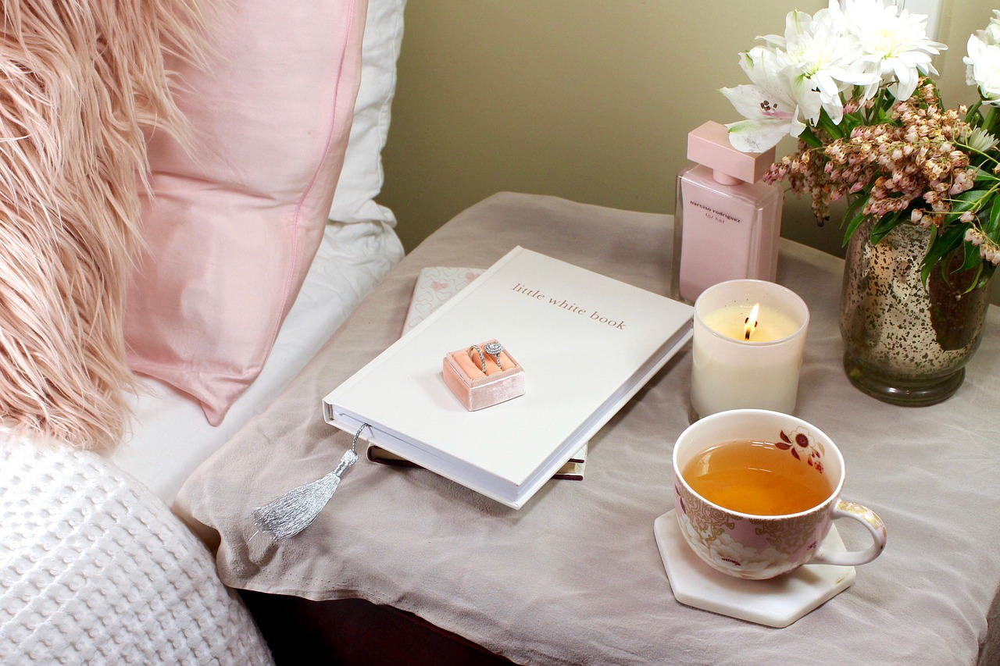

~ SNS ~
Blog
いちばん素の自分を出せる場所です。
ときどきかっこつけちゃうけど、いい事だけでなくダメダメな自分や失敗だらけの自分もそのまま表現するようにしてます。
私を変えてくれたマインドや生き方についても一番深くお伝えしているので、過去記事含め読んでいただけると嬉しいです♡
そろそろ変わりたい
LINE
月・木にエネルギーとモチベが上がるマインドセットを配信しています。
個別でメッセージ可能なので、一番岡本とのキョリが近いかも！？
登録者は５４０人を突破しました！
今だけ登録者特典の『毎日が楽しくなる３０のヒント』をプレゼント中🎁
メッセージ、じゃんじゃん待ってますっ♡
たまには本音で語りたい

Instagram
“読んでエネルギーが上がる”をモットーに、さらっと読めるポエムを目指しています。
短い文章でまとめるのが苦手なので、毎回文字数に頭を悩まされていますが、（笑）どれも私が大切にしている価値観や行動指針だったりするので内容に妥協はしません！
ぜひ、楽しく読んで、モチベに変えていただければと思います。
たまにはポエりたい
その時感じた“旬の気持ち”をツイートしています。
時にはカッコつけて、時には等身大で（笑）
その瞬間に心が動かされたことをさらさらと綴っています。
基本的にはモチベが上がる内容が多いので、気分が沈みかけた時の処方箋にどうぞ♡
裏アカじゃないよ（笑）